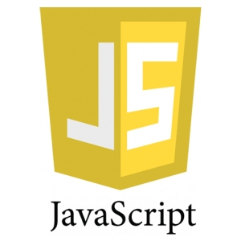

Un lenguaje de programación es un sistema formal que especifica un conjunto de instrucciones capaces de ser ejecutadas por una unidad central de procesamiento (CPU) o una máquina virtual. Estos lenguajes se clasifican según su paradigma (imperativo, orientado a objetos, funcional o reactivo) y su método de traducción, distinguiéndose entre lenguajes compilados mediante código máquina directo e interpretados mediante entornos de ejecución intermediarios.
En el desarrollo de software contemporáneo, lenguajes como JavaScript destacan por su arquitectura orientada a eventos y ejecuciones asíncronas mono-hilo. Gracias a motores de optimización en tiempo real (JIT - Just-In-Time) como el motor V8, se ha logrado llevar el procesamiento intensivo tanto al navegador cliente como a entornos de servidor mediante arquitecturas distribuidas.